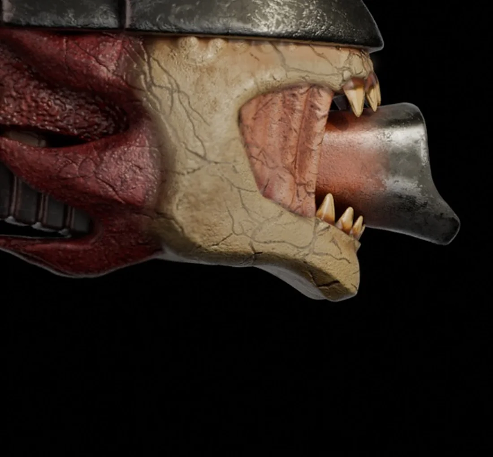
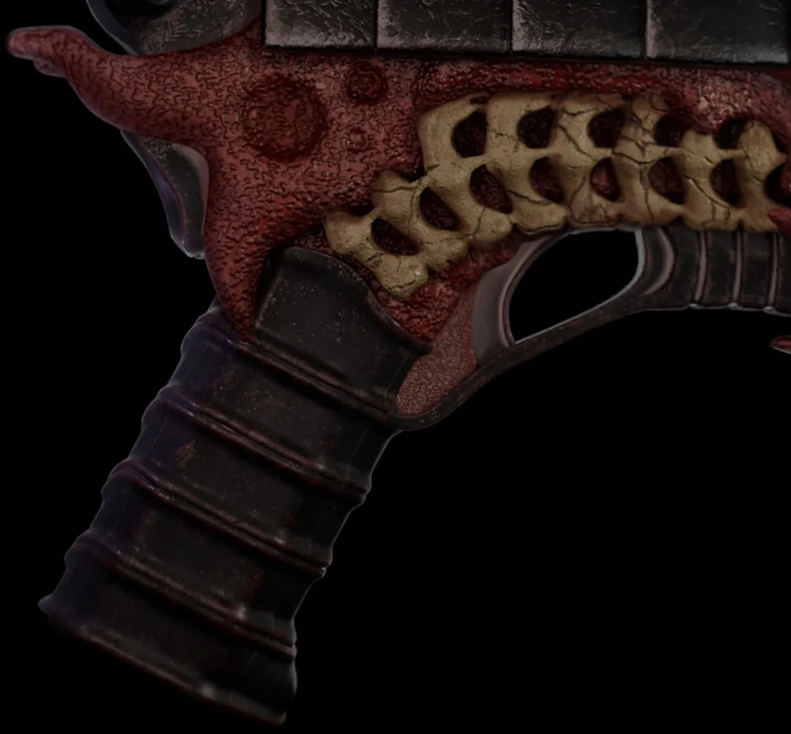

Bone Pistol
A dark-fantasy creature weapon where hard surface meets organic: a ridged metal top, a vertebra-like bone frame, raw red flesh, a wrapped grip and a fanged skull for a muzzle.Оружие-существо в стиле dark fantasy, где хард-сёрфейс встречается с органикой: рифлёная металлическая крышка, костяной каркас в виде позвонков, красная плоть, обмотанная рукоять и клыкастый череп вместо дула.

A gun that bitesПистолет, который кусается
The silhouette stays readable as a pistol while every part borrows from anatomy: spine plates on top, ribs in the frame, a jaw at the muzzle.Силуэт остаётся читаемым как пистолет, но каждая часть взята из анатомии: пластины хребта сверху, рёбра в каркасе, челюсть на дуле.


Four materials, one objectЧетыре материала в одном предмете
Cold scratched metal, porous bone, wet red flesh and dark leather wrap: each surface gets its own texture and roughness so the object reads at a glance.Холодный поцарапанный металл, пористая кость, влажная красная плоть и тёмная кожаная обмотка: у каждой поверхности своя фактура и шероховатость, чтобы предмет читался с первого взгляда.